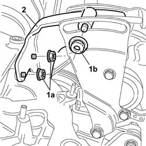
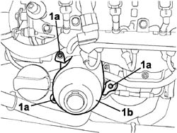
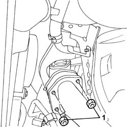
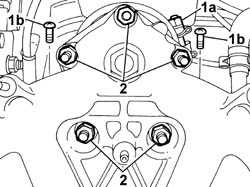
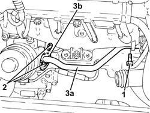
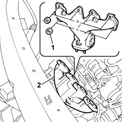
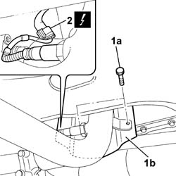
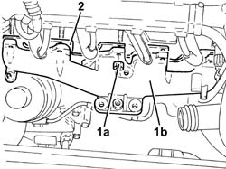
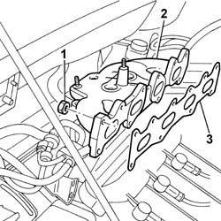
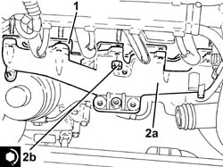

1072C10 exhaust manifold - r + r and replace seal
- Path
- Procedures > 10 ENGINE > 1072 INLET AND EXHAUST MANIFOLDS > 1072C EXHAUST MANIFOLDS > 1072C10 exhaust manifold - r + r and replace seal
- Kind
- repair procedure (removal / refitting; the operation number is the code)
- Applies to
- all engines; all production periods
- Interactive page
- https://sloeber94.github.io/elrnDB-fDbl/en/#/2584365
Applies to: all engines; all production periods
 Removing
Removing
 Refitting
RefittingPlace the vehicle on a lift.
Disconnect the battery negative terminal.
 | Name | Connector |
|---|---|---|
- | Battery | A1 |
7055B54 under-engine guard - r r
1080B94 front lambda probe with catalitic converter r r
1072C44 exhaust manifold heat shield on bulkhead - r+r
1092C10 power steering and/or self-levelling suspension pump drive belt - r + r
1. Undo nuts (1a) securing the reinforcement bracket to the exhaust manifold, undo nut (1b) securing it to the power steering pump mount.
2. Remove the bracket from the engine bay.

Applies to: all engines; all production periods
Removing
RefittingPosition the car on the ramp.
Ensure that the ignition key is in the OFF position, then disconnect the negative battery terminal.
| Name | Connector |
|---|---|---|
- | Battery | A1H |
Carry out 7055B54 under-engine guard - r r .
Carry out 1064A11 TURBOCHARGER with CATALYTIC CONVERTER - R.R. .
1. Undo the fixing bolts (1a) and remove the heat shield (1b) for the engine oil filter cartridge.

Applies to: all engines; all production periods
Removing
Refitting1016A22 cam cover with fuel duct - r + r and replace gasket
1072C44 exhaust manifold heat shield on bulkhead - r+r
7055B54 under-engine guard - r r
1080C50 pipe carrying exhaust gas to e.g.r. valve - r + r
1. Undo the nuts securing the exhaust pipe front section to the corresponding manifold.

Applies to: all engines; all production periods
Removing
RefittingProceed with the removal 1072C44 exhaust manifold heat shield on bulkhead - r+r .
Proceed with the removal 7055B54 under-engine guard - r r .
Proceed with the removal 1064A19 TURBOCHARGER - EXHAUST MANIFOLD - EXHAUST PIPE CONNECTING HOSE - R.R. .
Proceed with the removal 1064A20 turbo/manifold/sleeve assembly dismantle .
Applies to: all engines; all production periods
1. Loosen nut (1a) on the catalytic converter band, undo bolts (1b) on the catalytic converter flange.
2. Undo the nuts securing the catalytic converter to the exhaust manifold.

Applies to: all engines; all production periods
1. Undo the bolts fixing the coolant supply pipe to the engine oil heat exchanger, crankcase side.
2. Undo the bolts fixing the coolant supply pipe to the engine oil heat exchanger, heat exchanger side.
3. Move aside the pipe carrying coolant to the engine oil heat exchanger (3a) complete with seal (3b).

Applies to: all engines; all production periods
Lower the lift.
1. Undo the retaining nuts.
2. Remove the exhaust manifold, detaching it from the bolts on the cylinder head.

Applies to: all engines; all production periods
Refitting
RemovingProceed with the refitting 1064A20 turbo/manifold/sleeve assembly dismantle .
Proceed with the refitting 1064A19 TURBOCHARGER - EXHAUST MANIFOLD - EXHAUST PIPE CONNECTING HOSE - R.R. .
Proceed with the refitting 7055B54 under-engine guard - r r .
Proceed with the refitting 1072C44 exhaust manifold heat shield on bulkhead - r+r .
Applies to: all engines; all production periods
1. Raise the lift and undo bolts (1a) securing the lower heat shield bracket (1b) and remove.
2. Disconnect the electrical connection for the rear Lambda sensor and move the catalytic converter aside from the exhaust manifold.
| Name | Connector |
|---|---|---|
2 | Lambda sensor on catalyzer | K17 |

Applies to: all engines; all production periods
1. Undo the nuts (1a) and remove the exhaust manifold (1b).
2. Remove the exhaust manifold gasket.

Applies to: all engines; all production periods
Refitting
RemovingFit the exhaust manifold onto the corresponding studs.
Tighten the nuts securing the manifold to the cylinder head to the recommended torque.
 | Fastening | Component | Ø | Value (daNm) |
|---|---|---|---|---|
- | Nut | EXHAUST MANIFOLD/S | M8 | (Cylinder head side) 2.5 |
Raise the lift.
Tighten the nuts securing the exhaust manifold to the front pipe section.
| Fastening | Component | Ø | Value (daNm) |
|---|---|---|---|---|
- | Nut | EXHAUST PIPE TO ENGINE | M8 | (Exhaust manifold) 3 |
1080C50 pipe carrying exhaust gas to e.g.r. valve - r + r
1016A22 cam cover with fuel duct - r + r and replace gasket
Applies to: all engines; all production periods
1. Undo the nuts securing the exhaust manifold to the cylinder head.
2. Remove the exhaust manifold.
3. Recover the exhaust manifold seal.

Applies to: all engines; all production periods
Refitting
Removing1. Place a new exhaust manifold gasket in its seating.
2. Place the exhaust manifold (2a) back in its housing and fix it tightening the nuts (2b) to the recommended torque.
| Fastening | Component | Ø | Value (daNm) |
|---|---|---|---|---|
2b | Nut | EXHAUST MANIFOLD/S | M8 | (Lower cylinder head side) 2.1 ÷ 2.5 |

Applies to: all engines; all production periods
Refitting
RemovingPlace the exhaust manifold, complete with a new gasket, back in its housing and fix it to the cylinder head tightening the nuts to the recommended torque.
| Fastening | Component | Ø | Value (daNm) |
|---|---|---|---|---|
- | Nut | EXHAUST MANIFOLD/S | M8 | (Cylinder head side) 2.5 |
Replace the catalytic converter by securing the studs to the exhaust manifold.
Connect the electrical connection for the rear Lambda sensor.
| Name | Connector |
|---|---|---|
- | Lambda sensor on catalyzer | K17 |
Position the lower heat shield bracket and tighten the retaining bolts.
Lower the lift and tighten the nuts securing the catalytic converter to the exhaust manifold to the specified torque.
| Fastening | Component | Ø | Value (daNm) |
|---|---|---|---|---|
- | Nut | EXHAUST MANIFOLD/S | M8 | (Catalytic converter) 2.5 |
Tighten the bolts securing the catalytic converter to the retaining flange to the specified torque.
| Fastening | Component | Ø | Value (daNm) |
|---|---|---|---|---|
- | Bolt | EXHAUST MANIFOLD/S | M8 | (Catalytic converter) 3 |
Tighten the nut on the catalytic converter retaining band.
Fit the reinforcement bracket to the exhaust manifold and tighten the retaining nuts to the specified torque.
| Fastening | Component | Ø | Value (daNm) |
|---|---|---|---|---|
- | Nut | POWER STEERING PUMP | M10 x 1.25 | (Cylinder head) 5 |
1092C10 power steering and/or self-levelling suspension pump drive belt - r + r
1092C12 power steering pump drive belt - adjust tension
1072C44 exhaust manifold heat shield on bulkhead - r+r
1080B94 front lambda probe with catalitic converter r r
7055B54 under-engine guard - r r
Connect the battery negative terminal.
| Name | Connector |
|---|---|---|
- | Battery | A1 |
Remove the car from the ramps.
Applies to: all engines; all production periods
Refit in its seating the coolant inlet pipe to the engine oil heat exchanger, complete with gasket, and secure it with the bolts to the engine oil heat exchanger.
Tighten the coolant inlet hose bolt to the engine oil heat exchanger, crankcase side.
Position the engine oil filter cartridge heat shield in its seating and tighten the fixing bolts.
Carry out 1064A11 TURBOCHARGER with CATALYTIC CONVERTER - R.R. .
Carry out 7055B54 under-engine guard - r r .
Connect the battery negative terminal.
| Name | Connector |
|---|---|---|
- | Battery | A1H |
Remove the car from the ramps.
Topics linked from this page (10)
- 1016A22 cam cover with fuel duct - r + r and replace gasket
- 1064A11 TURBOCHARGER with CATALYTIC CONVERTER - R.R.
- 1064A19 TURBOCHARGER - EXHAUST MANIFOLD - EXHAUST PIPE CONNECTING HOSE - R.R.
- 1064A20 turbo/manifold/sleeve assembly dismantle
- 1072C44 exhaust manifold heat shield on bulkhead - r+r
- 1080B94 front lambda probe with catalitic converter r r
- 1080C50 pipe carrying exhaust gas to e.g.r. valve - r + r
- 1092C10 power steering and/or self-levelling suspension pump drive belt - r + r
- 1092C12 power steering pump drive belt - adjust tension
- 7055B54 under-engine guard - r r